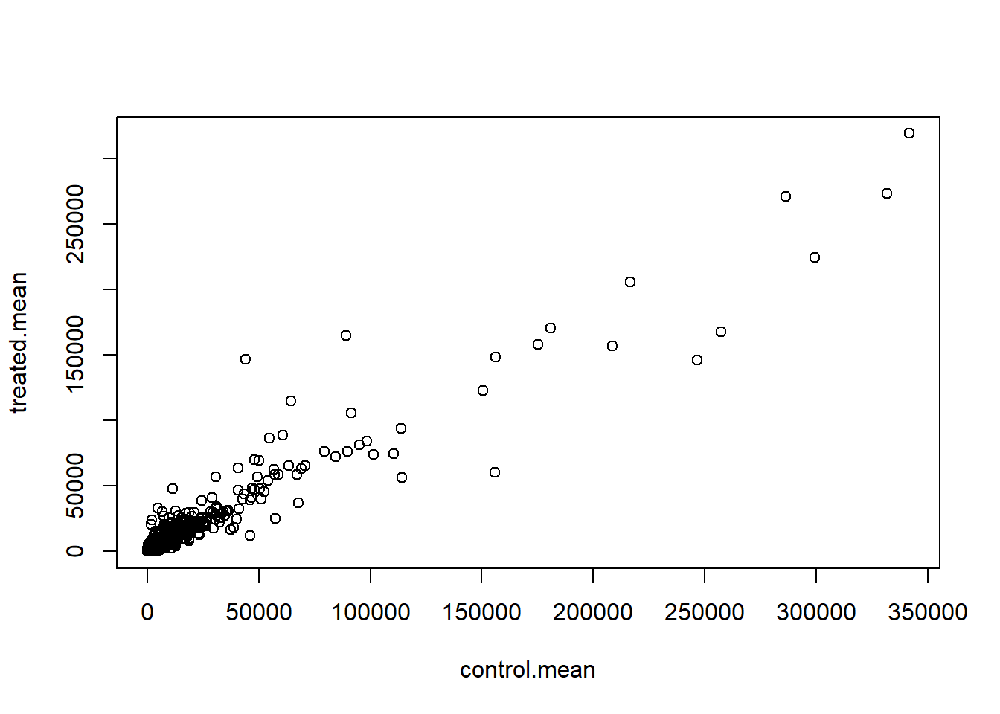
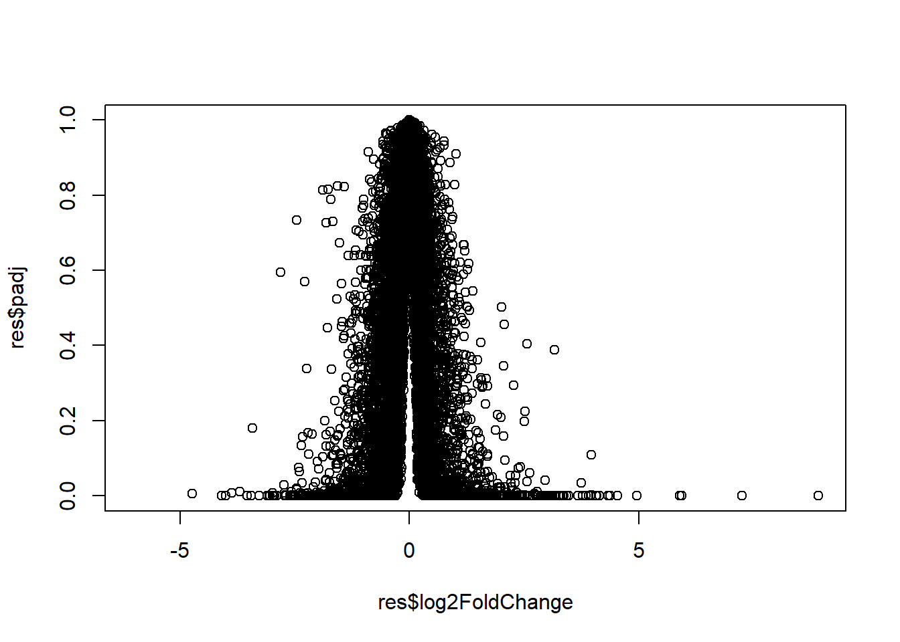
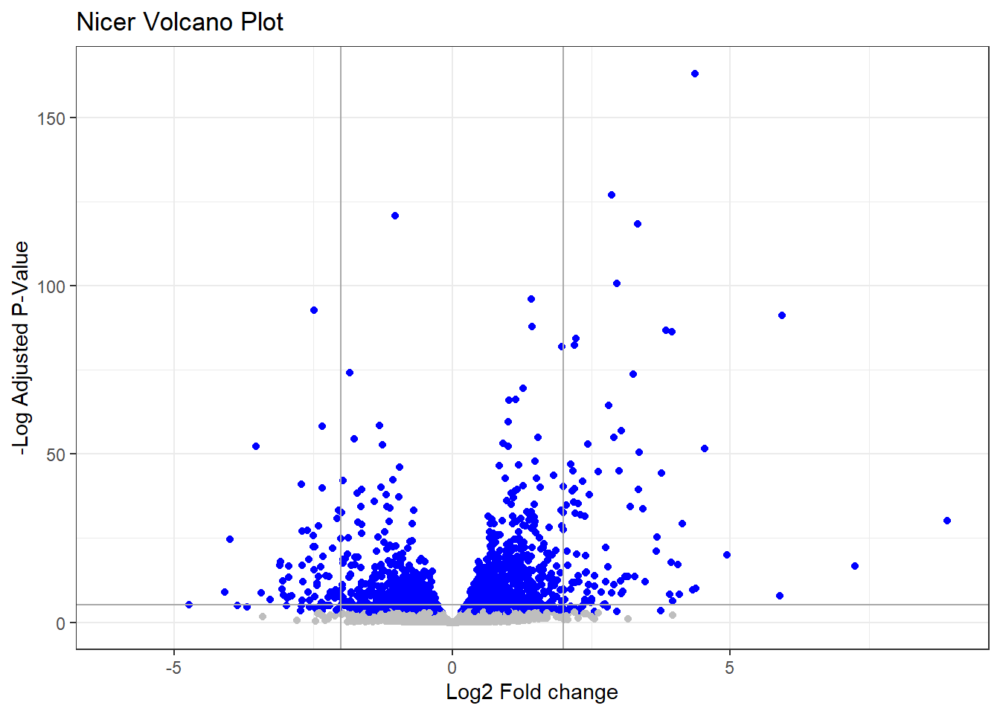
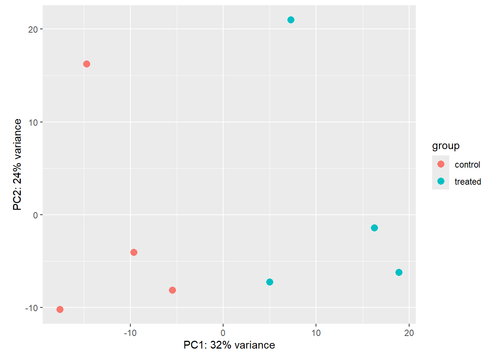

# Complete the missing code
counts <- read.csv("airway_scaledcounts.csv", row.names=1)
metadata <- read.csv("airway_metadata.csv")Class13 Lab
In today’s class we will analyze some published RNA-seq experiment where airway smooth muscle cells were treated with dexamethasone, a synthetic glucocorticoid steroid with anti-inflammatory effects (Himes et al. 2014).
We will use the DESeq2 package for the heavy lifting in a little bit but first lets read the data and get to know how things work.
##Data import There are two datasets that I need for this type of analysis: -contData:the trasncipt abundances (counts per gene) -colData:metadata about the columns in countData (i.e. experimental setup).
head(counts) SRR1039508 SRR1039509 SRR1039512 SRR1039513 SRR1039516
ENSG00000000003 723 486 904 445 1170
ENSG00000000005 0 0 0 0 0
ENSG00000000419 467 523 616 371 582
ENSG00000000457 347 258 364 237 318
ENSG00000000460 96 81 73 66 118
ENSG00000000938 0 0 1 0 2
SRR1039517 SRR1039520 SRR1039521
ENSG00000000003 1097 806 604
ENSG00000000005 0 0 0
ENSG00000000419 781 417 509
ENSG00000000457 447 330 324
ENSG00000000460 94 102 74
ENSG00000000938 0 0 0Q1. How many genes are in this dataset?
head(metadata) id dex celltype geo_id
1 SRR1039508 control N61311 GSM1275862
2 SRR1039509 treated N61311 GSM1275863
3 SRR1039512 control N052611 GSM1275866
4 SRR1039513 treated N052611 GSM1275867
5 SRR1039516 control N080611 GSM1275870
6 SRR1039517 treated N080611 GSM1275871nrow(counts)[1] 38694Q2
table(metadata$dex)
control treated
4 4 #or
sum(metadata$dex == "control")[1] 4all(colnames(counts) == metadata$id)[1] TRUEall(c(T,T,F))[1] FALSE##We have control and treated columns per rows of genes, Let’s take the average of control vs treated to see overview of differences btw the groups
##Mean counts per condition
Let’s find the average gene counts (i.e.rows) for control and treated conditions (i.e. columns)
-extract all”control” columns/experiments -then find the row wise average for these columns
control.inds <- metadata$dex == "control"
control.counts <- counts[,control.inds]
dim(control.counts)[1] 38694 4#trying to get the average of each row in controls
control.mean <- rowMeans(control.counts)Do the same for the “treated” columns to produce treated.mean
treated.mean <- rowMeans(counts[, metadata$dex=="treated"])Let’s store these mean values all in one data.frame
meancounts <- data.frame(control.mean, treated.mean)
head(meancounts) control.mean treated.mean
ENSG00000000003 900.75 658.00
ENSG00000000005 0.00 0.00
ENSG00000000419 520.50 546.00
ENSG00000000457 339.75 316.50
ENSG00000000460 97.25 78.75
ENSG00000000938 0.75 0.00Make a plot of control vs treated
plot(meancounts)
plot(meancounts, log="xy")Warning in xy.coords(x, y, xlabel, ylabel, log): 15032 x values <= 0 omitted
from logarithmic plotWarning in xy.coords(x, y, xlabel, ylabel, log): 15281 y values <= 0 omitted
from logarithmic plot
library(ggplot2)
ggplot(meancounts)+ aes( control.mean, treated.mean)+
geom_point(alpha=0.3)
##Log fold change
We most often work in log2 units -why?
Because the interpretation is much more straightforward.
log2(20/20)[1] 0log2(20/40)[1] -1log2(40/20)[1] 1Calculate log2 fold change (log2fc) of treated/control
meancounts$log2fc <- log2(meancounts$treated/ meancounts$control.mean)
head(meancounts) control.mean treated.mean log2fc
ENSG00000000003 900.75 658.00 -0.45303916
ENSG00000000005 0.00 0.00 NaN
ENSG00000000419 520.50 546.00 0.06900279
ENSG00000000457 339.75 316.50 -0.10226805
ENSG00000000460 97.25 78.75 -0.30441833
ENSG00000000938 0.75 0.00 -InfThere are some weird numbers in the log2fc values like -Ind and NaN all because I have zero count genes. I need to filter these out (i.e. remove them) before going any further.
to.keep <- rowSums(meancounts[,1:2] == 0) ==0
mycounts <- meancounts[to.keep,]Q. How many non-zero count genes do we have left?
nrow(mycounts)[1] 21817Q. How many genes are “up” regulated at a log2fc >2
sum(mycounts$log2fc<2)[1] 21503Q.How many genes are “down” regulated at a log2fc <2
sum(mycounts$log2fc>2)[1] 250Q. Do you trust these results? why or why not?
NO, there are too many significant values
##DESeq analysis
To do this analysis properly we cna use the BioConductor package DESeq2:
Like most BioConductor packages DESeq wants it’s input in a very particular format.
#|message: false
library(DESeq2)Loading required package: S4VectorsLoading required package: stats4Loading required package: BiocGenerics
Attaching package: 'BiocGenerics'The following objects are masked from 'package:stats':
IQR, mad, sd, var, xtabsThe following objects are masked from 'package:base':
anyDuplicated, aperm, append, as.data.frame, basename, cbind,
colnames, dirname, do.call, duplicated, eval, evalq, Filter, Find,
get, grep, grepl, intersect, is.unsorted, lapply, Map, mapply,
match, mget, order, paste, pmax, pmax.int, pmin, pmin.int,
Position, rank, rbind, Reduce, rownames, sapply, saveRDS, setdiff,
table, tapply, union, unique, unsplit, which.max, which.min
Attaching package: 'S4Vectors'The following object is masked from 'package:utils':
findMatchesThe following objects are masked from 'package:base':
expand.grid, I, unnameLoading required package: IRanges
Attaching package: 'IRanges'The following object is masked from 'package:grDevices':
windowsLoading required package: GenomicRangesLoading required package: GenomeInfoDbLoading required package: SummarizedExperimentLoading required package: MatrixGenericsLoading required package: matrixStats
Attaching package: 'MatrixGenerics'The following objects are masked from 'package:matrixStats':
colAlls, colAnyNAs, colAnys, colAvgsPerRowSet, colCollapse,
colCounts, colCummaxs, colCummins, colCumprods, colCumsums,
colDiffs, colIQRDiffs, colIQRs, colLogSumExps, colMadDiffs,
colMads, colMaxs, colMeans2, colMedians, colMins, colOrderStats,
colProds, colQuantiles, colRanges, colRanks, colSdDiffs, colSds,
colSums2, colTabulates, colVarDiffs, colVars, colWeightedMads,
colWeightedMeans, colWeightedMedians, colWeightedSds,
colWeightedVars, rowAlls, rowAnyNAs, rowAnys, rowAvgsPerColSet,
rowCollapse, rowCounts, rowCummaxs, rowCummins, rowCumprods,
rowCumsums, rowDiffs, rowIQRDiffs, rowIQRs, rowLogSumExps,
rowMadDiffs, rowMads, rowMaxs, rowMeans2, rowMedians, rowMins,
rowOrderStats, rowProds, rowQuantiles, rowRanges, rowRanks,
rowSdDiffs, rowSds, rowSums2, rowTabulates, rowVarDiffs, rowVars,
rowWeightedMads, rowWeightedMeans, rowWeightedMedians,
rowWeightedSds, rowWeightedVarsLoading required package: BiobaseWelcome to Bioconductor
Vignettes contain introductory material; view with
'browseVignettes()'. To cite Bioconductor, see
'citation("Biobase")', and for packages 'citation("pkgname")'.
Attaching package: 'Biobase'The following object is masked from 'package:MatrixGenerics':
rowMediansThe following objects are masked from 'package:matrixStats':
anyMissing, rowMedianscitation("DESeq2")To cite package 'DESeq2' in publications use:
Love, M.I., Huber, W., Anders, S. Moderated estimation of fold change
and dispersion for RNA-seq data with DESeq2 Genome Biology 15(12):550
(2014)
A BibTeX entry for LaTeX users is
@Article{,
title = {Moderated estimation of fold change and dispersion for RNA-seq data with DESeq2},
author = {Michael I. Love and Wolfgang Huber and Simon Anders},
year = {2014},
journal = {Genome Biology},
doi = {10.1186/s13059-014-0550-8},
volume = {15},
issue = {12},
pages = {550},
}dds <- DESeqDataSetFromMatrix(countData=counts,
colData=metadata,
design=~dex)converting counts to integer modeWarning in DESeqDataSet(se, design = design, ignoreRank): some variables in
design formula are characters, converting to factorsddsclass: DESeqDataSet
dim: 38694 8
metadata(1): version
assays(1): counts
rownames(38694): ENSG00000000003 ENSG00000000005 ... ENSG00000283120
ENSG00000283123
rowData names(0):
colnames(8): SRR1039508 SRR1039509 ... SRR1039520 SRR1039521
colData names(4): id dex celltype geo_iddds <- DESeq(dds)estimating size factorsestimating dispersionsgene-wise dispersion estimatesmean-dispersion relationshipfinal dispersion estimatesfitting model and testingres <- results(dds)
head(res)log2 fold change (MLE): dex treated vs control
Wald test p-value: dex treated vs control
DataFrame with 6 rows and 6 columns
baseMean log2FoldChange lfcSE stat pvalue
<numeric> <numeric> <numeric> <numeric> <numeric>
ENSG00000000003 747.194195 -0.3507030 0.168246 -2.084470 0.0371175
ENSG00000000005 0.000000 NA NA NA NA
ENSG00000000419 520.134160 0.2061078 0.101059 2.039475 0.0414026
ENSG00000000457 322.664844 0.0245269 0.145145 0.168982 0.8658106
ENSG00000000460 87.682625 -0.1471420 0.257007 -0.572521 0.5669691
ENSG00000000938 0.319167 -1.7322890 3.493601 -0.495846 0.6200029
padj
<numeric>
ENSG00000000003 0.163035
ENSG00000000005 NA
ENSG00000000419 0.176032
ENSG00000000457 0.961694
ENSG00000000460 0.815849
ENSG00000000938 NASave out results to CSV file:
write.csv(res, file="myresults.csv")Let’s make a common summary plot of our results. Our main results here are the log2 fold change and adjusted P-value
plot(res$log2FoldChange, res$padj)
We need to transform the P-value axis here so we can see the data we actually care about (small p-values)
plot(res$log2FoldChange, log(res$padj))
To make folks happy we need to flip the y-axis so the most important/sig values are at he bottom
plot(res$log2FoldChange, -log(res$padj))
This is our “standard” volcano plot - lets make a nicer on in ggplot We can use color to highlight the most important subset of trascipts with a lof2fc >+2 and <-2 that have a p-vaue <0.05. We will need a custom color vector for this mycols
mycols <- rep("grey", nrow(res))
mycols[res$log2FoldChange >= 2] <- "blue"
mycols[res$log2FoldChange <= 2] <- "blue"
mycols[res$padj >0.05] <- "grey"ggplot(res)+ aes(log2FoldChange, -log(padj)) +
geom_point(col=mycols) +
labs(title = "Nicer Volcano Plot")+
xlab("Log2 Fold change")+
ylab("-Log Adjusted P-Value") +
geom_vline(xintercept=c(-2, 2), col= "darkgrey") +
geom_hline(yintercept=-log(0.005), col= "darkgrey")+
theme_bw()Warning: Removed 23549 rows containing missing values or values outside the scale range
(`geom_point()`).
head(rownames(res))[1] "ENSG00000000003" "ENSG00000000005" "ENSG00000000419" "ENSG00000000457"
[5] "ENSG00000000460" "ENSG00000000938"We can use a set of BioConductor packages to map these ENSABLES ids to things like GENE SYMBOL, REFSEQ id, ENTREZ ID ect. In other words what each gene is called in different databases that I might want to use for further analysis.
I install these packages with BioManager::install()
library("AnnotationDbi")
library("org.Hs.eg.db")The difference formats that I can convert IDs between include:
columns(org.Hs.eg.db) [1] "ACCNUM" "ALIAS" "ENSEMBL" "ENSEMBLPROT" "ENSEMBLTRANS"
[6] "ENTREZID" "ENZYME" "EVIDENCE" "EVIDENCEALL" "GENENAME"
[11] "GENETYPE" "GO" "GOALL" "IPI" "MAP"
[16] "OMIM" "ONTOLOGY" "ONTOLOGYALL" "PATH" "PFAM"
[21] "PMID" "PROSITE" "REFSEQ" "SYMBOL" "UCSCKG"
[26] "UNIPROT" We can use the mapIds() function to do this “mapping”/conversion:
res$symbol <- mapIds(org.Hs.eg.db,
keys=row.names(res), # Our genenames
keytype="ENSEMBL", # The format of our genenames
column="SYMBOL", # The new format we want to add
multiVals="first")'select()' returned 1:many mapping between keys and columnshead(res)log2 fold change (MLE): dex treated vs control
Wald test p-value: dex treated vs control
DataFrame with 6 rows and 7 columns
baseMean log2FoldChange lfcSE stat pvalue
<numeric> <numeric> <numeric> <numeric> <numeric>
ENSG00000000003 747.194195 -0.3507030 0.168246 -2.084470 0.0371175
ENSG00000000005 0.000000 NA NA NA NA
ENSG00000000419 520.134160 0.2061078 0.101059 2.039475 0.0414026
ENSG00000000457 322.664844 0.0245269 0.145145 0.168982 0.8658106
ENSG00000000460 87.682625 -0.1471420 0.257007 -0.572521 0.5669691
ENSG00000000938 0.319167 -1.7322890 3.493601 -0.495846 0.6200029
padj symbol
<numeric> <character>
ENSG00000000003 0.163035 TSPAN6
ENSG00000000005 NA TNMD
ENSG00000000419 0.176032 DPM1
ENSG00000000457 0.961694 SCYL3
ENSG00000000460 0.815849 FIRRM
ENSG00000000938 NA FGRres$genename <- mapIds(org.Hs.eg.db,
keys=row.names(res), # Our genenames
keytype="ENSEMBL", # The format of our genenames
column="GENENAME", # The new format we want to add
multiVals="first")'select()' returned 1:many mapping between keys and columnsres$entrez <- mapIds(org.Hs.eg.db,
keys=row.names(res), # Our genenames
keytype="ENSEMBL", # The format of our genenames
column="ENTREZID", # The new format we want to add
multiVals="first")'select()' returned 1:many mapping between keys and columnshead(res)log2 fold change (MLE): dex treated vs control
Wald test p-value: dex treated vs control
DataFrame with 6 rows and 9 columns
baseMean log2FoldChange lfcSE stat pvalue
<numeric> <numeric> <numeric> <numeric> <numeric>
ENSG00000000003 747.194195 -0.3507030 0.168246 -2.084470 0.0371175
ENSG00000000005 0.000000 NA NA NA NA
ENSG00000000419 520.134160 0.2061078 0.101059 2.039475 0.0414026
ENSG00000000457 322.664844 0.0245269 0.145145 0.168982 0.8658106
ENSG00000000460 87.682625 -0.1471420 0.257007 -0.572521 0.5669691
ENSG00000000938 0.319167 -1.7322890 3.493601 -0.495846 0.6200029
padj symbol genename entrez
<numeric> <character> <character> <character>
ENSG00000000003 0.163035 TSPAN6 tetraspanin 6 7105
ENSG00000000005 NA TNMD tenomodulin 64102
ENSG00000000419 0.176032 DPM1 dolichyl-phosphate m.. 8813
ENSG00000000457 0.961694 SCYL3 SCY1 like pseudokina.. 57147
ENSG00000000460 0.815849 FIRRM FIGNL1 interacting r.. 55732
ENSG00000000938 NA FGR FGR proto-oncogene, .. 2268write.csv(res, file="myresults_annotated.csv")##PCA
Let’s use KEGG to see what pathways my gene sets overlap with - i.e. highlight the biology that may be influenced by the dex drug treatment.
We will use the following pachageL BiocManager::install( c(“pathview”, “gage”, “gageData”) )
library(pathview)##############################################################################
Pathview is an open source software package distributed under GNU General
Public License version 3 (GPLv3). Details of GPLv3 is available at
http://www.gnu.org/licenses/gpl-3.0.html. Particullary, users are required to
formally cite the original Pathview paper (not just mention it) in publications
or products. For details, do citation("pathview") within R.
The pathview downloads and uses KEGG data. Non-academic uses may require a KEGG
license agreement (details at http://www.kegg.jp/kegg/legal.html).
##############################################################################library(gage)library(gageData)
data(kegg.sets.hs)
# Examine the first 2 pathways in this kegg set for humans
head(kegg.sets.hs, 2)$`hsa00232 Caffeine metabolism`
[1] "10" "1544" "1548" "1549" "1553" "7498" "9"
$`hsa00983 Drug metabolism - other enzymes`
[1] "10" "1066" "10720" "10941" "151531" "1548" "1549" "1551"
[9] "1553" "1576" "1577" "1806" "1807" "1890" "221223" "2990"
[17] "3251" "3614" "3615" "3704" "51733" "54490" "54575" "54576"
[25] "54577" "54578" "54579" "54600" "54657" "54658" "54659" "54963"
[33] "574537" "64816" "7083" "7084" "7172" "7363" "7364" "7365"
[41] "7366" "7367" "7371" "7372" "7378" "7498" "79799" "83549"
[49] "8824" "8833" "9" "978" The gage function wants as input a named vector of importance
x <- c(10, 1, 20)
names(x) <- c("barry", "alice", "elsa")
xbarry alice elsa
10 1 20 foldchanges = res$log2FoldChange
names(foldchanges) = res$entrez
head(foldchanges) 7105 64102 8813 57147 55732 2268
-0.35070302 NA 0.20610777 0.02452695 -0.14714205 -1.73228897 # Get the results
keggres = gage(foldchanges, gsets=kegg.sets.hs)head(keggres$less) p.geomean stat.mean
hsa05332 Graft-versus-host disease 0.0004250461 -3.473346
hsa04940 Type I diabetes mellitus 0.0017820293 -3.002352
hsa05310 Asthma 0.0020045888 -3.009050
hsa04672 Intestinal immune network for IgA production 0.0060434515 -2.560547
hsa05330 Allograft rejection 0.0073678825 -2.501419
hsa04340 Hedgehog signaling pathway 0.0133239547 -2.248547
p.val q.val
hsa05332 Graft-versus-host disease 0.0004250461 0.09053483
hsa04940 Type I diabetes mellitus 0.0017820293 0.14232581
hsa05310 Asthma 0.0020045888 0.14232581
hsa04672 Intestinal immune network for IgA production 0.0060434515 0.31387180
hsa05330 Allograft rejection 0.0073678825 0.31387180
hsa04340 Hedgehog signaling pathway 0.0133239547 0.47300039
set.size exp1
hsa05332 Graft-versus-host disease 40 0.0004250461
hsa04940 Type I diabetes mellitus 42 0.0017820293
hsa05310 Asthma 29 0.0020045888
hsa04672 Intestinal immune network for IgA production 47 0.0060434515
hsa05330 Allograft rejection 36 0.0073678825
hsa04340 Hedgehog signaling pathway 56 0.0133239547We can have a quick look at one of the highlighted pathways e.g.hsa05310
pathview(gene.data=foldchanges, pathway.id="hsa05310")'select()' returned 1:1 mapping between keys and columnsInfo: Working in directory C:/Users/leonn/OneDrive - San Diego State University (SDSU.EDU)/UCSD/Bioinformatics/Class13Info: Writing image file hsa05310.pathview.png
vsd <- vst(dds, blind = FALSE)
plotPCA(vsd, intgroup = c("dex"))using ntop=500 top features by variance